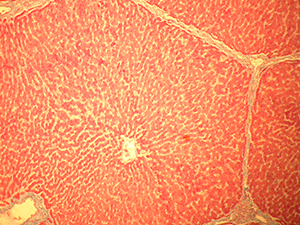
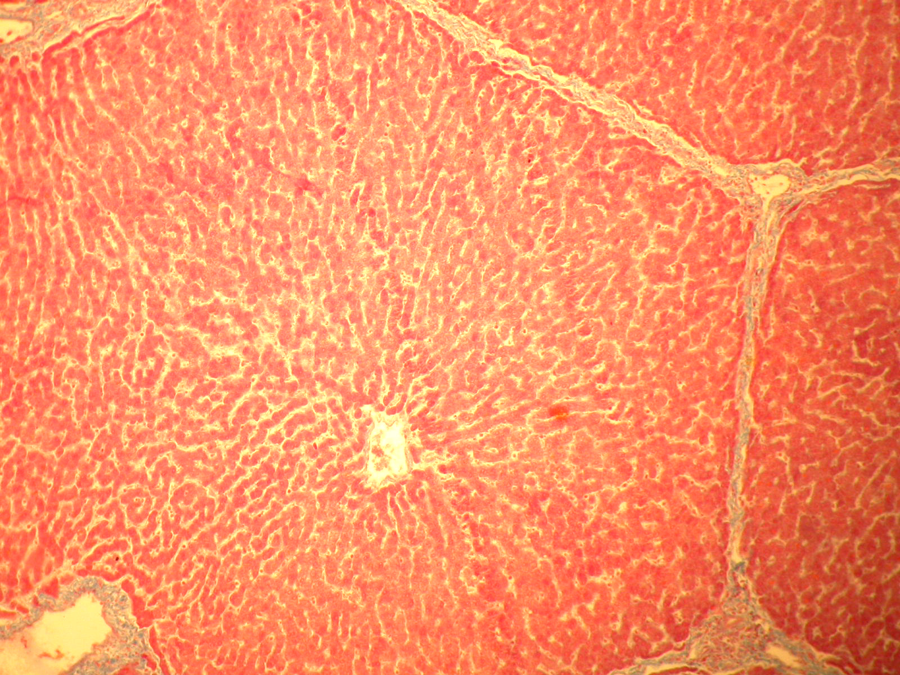
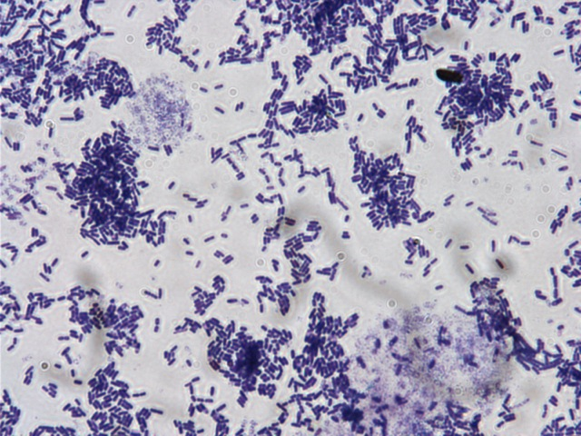

Makhluk hidup dalam Kingdom Monera adalah organisme prokariota unicell, yaitu makhluk hidup ber-sel tunggal yang selnya tidak memiliki membran inti. Materi genetiknya berpusat pada daerah yang disebut nukleoid (DNA & RNA) serta sitoplasma yang mengandung ribosom. Organisme yang termasuk Monera adalah Archaebacteria dan Eubacteria. Adapun ciri-ciri organisme Monera, yaitu:
Merupakan organisme Prokariotik atau tidak mempunyai membran inti.
Merupakan organisme Unicell atau terdiri dari sel tunggal.
Monera berukuran sekitar 1 mikrometer (0.001mm).
Membran plasma terdiri dari lemak dan protein.
Beberapa Monera memiliki rambut seperti pilli untuk menempel atau ekor seperti flagela untuk bergerak.
Sumber nutrisi bagi organisme ini biasanya fotosintesis atau kemosintesis.
Berkembang biak dengan amitosis (membelah diri secara langsung).
Monera dapat berupa aerobik maupun anaerobik.
Tahukah kamu apakah itu yang dimaksud aerobik dan anaerobik? Klik disini deh kalau kepo :D
Yang dimaksud dengan aerobik adalah organisme yang mampu hidup dengan memerlukan udara sedangkan anaerobik adalah organisme yang mampu hidup tanpa memerlukan udara sekalipun.... WOW!! Nah nambah ilmu kan? dilanjutkan yuk mengenal lebih jauh apa sih itu organisme Archaebacteria dan Eubacteria. Silahkan pilih menu di sebelah kanan ya.
Archaebacteria
Archaebacteria (Latin, archaio = kuno) adalah kelompok bakteri yang dinding selnya tidak mengandung peptidoglikan, tapi membran plasmanya mengandung lipid.
Berdasarkan habitatnya, Archaebacteria dapat dikelompokkan menjadi tiga sebagai berikut:
Halofilik,
Bakteri Halofilik adalah bakteri yang hidup di lingkungan yang berkadar garam tinggi, contohnya Halobacterium sp.
Methanogen,
Bakteri Methanogen adalah bakteri yang bersifat anaerob dan dapat menghasilkan gas metana (CH4) dari gas hydrogen dan CO2 atau asam asetat. Bakteri ini hidup di lingkungan yang memproduksi metan, misalnya rawa-rawa, dasar kolam, atau usus binatang, contohnya:
- Lachnospira multiparus, organisme ini mampu menyederhanakan pectin;
- Ruminococcus albus, organisme ini mampu menghidolisis selulosa;
- Succumonas amylotica, memiliki kemampuan menguraikan amilum;
-Methanococcus janashi, penghasil gas metana (CH4);
Thermoasidofilik,
Bakteri Thermoasidofilik merupakan bakteri yang dapat hidup di lingkungan yang mempunyai suhu dan tingkat keasaman tinggi, misalnya di kawah vulkanik dan mata air panas. Bakteri ini bersifat kemoautotrof yang dapat memanfaatkan H2S sebagai sumber energy seperti di kawah vulkanik. Contoh Thermoasidofilik adalah Pyrolobus fumarii tumbuh dengan temperature optimum 106°C.
Eubacteria
Eubacteria berasal dari awalan “eu” yang berarti sejati dan “bacteria” yang berarti bakteri. Eubacteria adalah bakteri pada umumnya yang ada di sekitar kita dan sering kita temui dalam kehidpan sehari-hari, kemudian Eubacteria dibagi lagi menjadi menjadi lima phyllums (kelas) disebut sebagai Spirochetes, Chlamydias, Bakteri Gram Positif, Cyanobacteria dan Proteobacteria.
Berdasarkan cara mendapatkan makanan, Eubacteria dapat dikelompokkan menjadi empat sebagai berikut:
Eubacteria Fotoautotrof,
Bakteri yang mendapatkan makanan dari proses fotosintesis (ia memiliki klorofil) contohnya seperti Cyanobacteria.
Eubacteria Fotoheterotrof,
Bakteri ini menggunakan energi cahaya untuk menghasilkan energi untuk hidupnya, jenis bakteri ini sangat jarang ditemui contohnya Rhodospirillum Rubrum.
Eubacteria Kemoautotrof,
Bakteri ini memperoleh energi dari hasil dari oksidasi senyawa anorganik. Banyak bakteri dari jenis ini yang berperan penting dalam siklus nitrogen. Ia juga sangat membantu dalam pembentukan asam amino dan protein, contohnya seperti Nitrobacter.
Eubacteria Kemoheterotrof,
Ciri khas dari bakteri ini adalah ia mengkonsumsi material organik untuk menghasilkan energi. Jenis bakteri ini banyak dikenal sebagai agen pengurai dari sisa-sisa makhluk hidup. Eubacteria Kemoheterotrof juga dikenal bisa menghasilkan sejenis pestisida tanah. Manusia juga banyak memanfaatkannya untuk pembuatan acar mentimun, yogurt, dan keju (Lactobacillus).
Gallery Foto & Video
Klik gambar dibawah ini untuk membaca deskripsi lebih lanjut

Thermococcus
Litoralis
Adalah bakteri golongan Archaebacteria berjenis Thermoasidofilik.
e-Collie
Adalah bakteri golongan Eubacteria yang termasuk Kemoautotrof.
Koloni Eubacteria
Dalam gambar ini adalah sekumpulan bentuk Eubacteria pada umumnya.
Lactobacillus
Adalah bakteri golongan Eubacteria yang termasuk Kemoheterotrof.
Thermococcus Litoralis
Dalam gambar ini adalah bakteri Thermococcus Litoralis, biasanya ditemukan di tempat ekstrim seperti dasar samudera dengan suhu tinggi.

e-Collie
Dalam gambar ini merupakan bentuk bakteri e-Collie ataupun organisme Monera pada umumnya. Bakteri ini berada dalam sistem pencernaan manusia di usus buntu berguna sebagai pembusukan sisa-sisa makanan.
Eubacteria
Ini adalah salah satu contoh koloni Eubacteria atau sekelompok organisme Monera yang berkembang biak.

Lactobacillus
Dalam gambar ini merupakan bentuk bakteri Lactobacillus yang termasuk dalam Eubacteria Kemoheterofrof, bakteri ini berguna dalam pembuatan fermentasi susu menjadi keju yang baik untuk kesehatan.